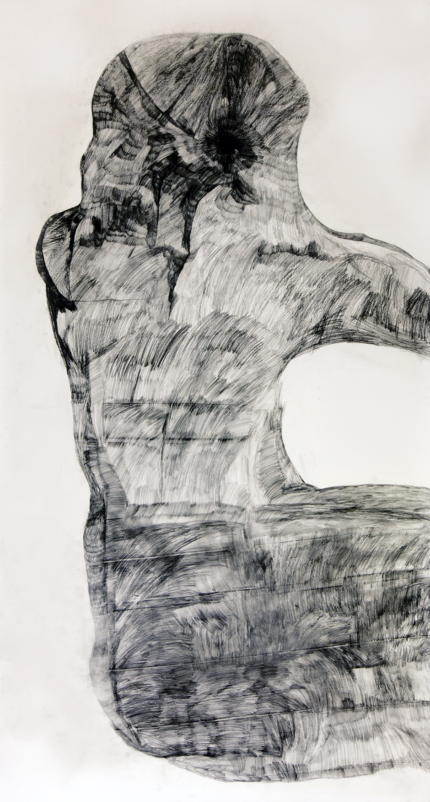
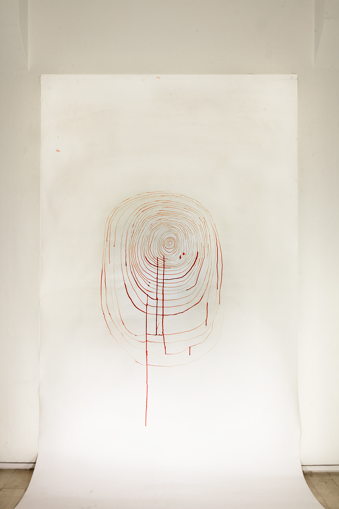
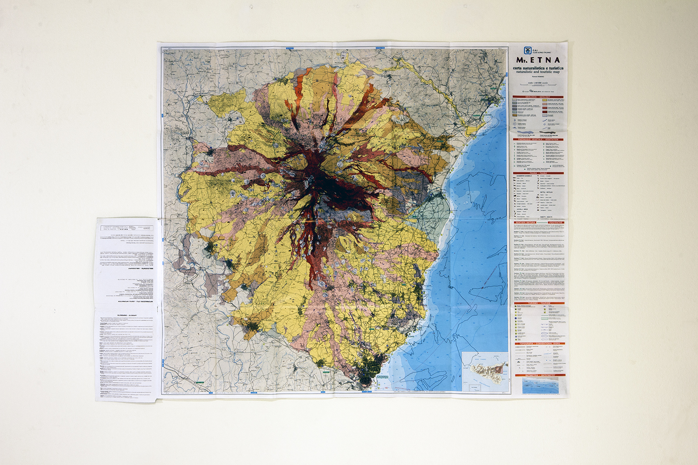
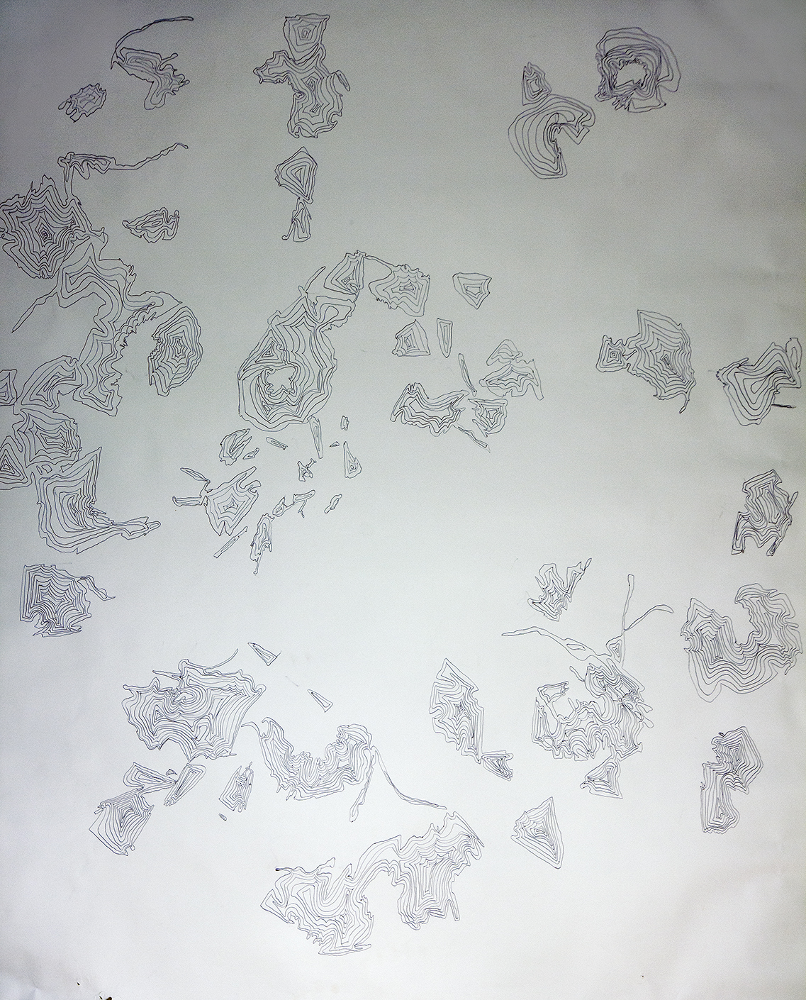

I began developing my own drawing style in my A level year taking art. In my foundation year at Camberwell College of Art - I completed my first large scale drawing. In this drawing I experimented with perforating paper. I was very much drawn to the texture of what the back of the paper felt like and the abstract pattern that was created.

Untitled, Pencil On Fabriano Paper 2011, 2 meters 80cm x 1 meter 57cm, 9.1ft x 5.1ft
(large scale pencil drawing with grey pencil)
During my foundation year, I also began experimenting with a overhead projector. The overhead projector is a tool that I use to trace objects onto paper and reflect objects on the wall. The overhead projector also enables me to explore focus and scale. These large scale drawings very much explore my interest in color, texture, nature and mapping. When I create large scale works, I find myself thinking about the difference in scale between my body and the paper and the challenge that comes with creating work much larger than me.

Untitled, Red Ink On Fabriano Paper 2010, 2 meters 50cm X 1 meters 50cm, 8.2ft x 4.9ft
(Red ink on Fabriano paper)

Untitled, Map Of Mount Etna, Black Ink On Printed Map 2012, 81cm X 81cm, 2.6ft x 2.6ft
(Mount Etna drawing)

Untitled, Biro on Fabriano Paper, 2011-2012, 1 meter 50 cm x 1 meter 50 cm, 4.9ft x 4.9ft
(Drawing below Mount Etna)